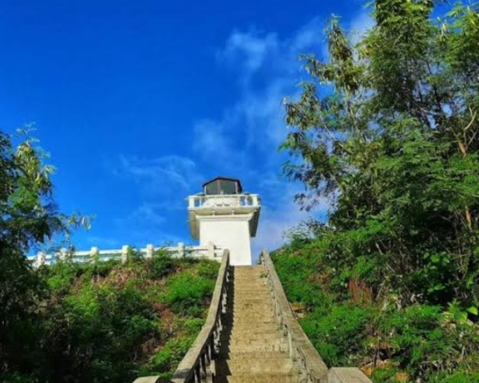

Welcome to Claveria, Cagayan!
Home
SentinelaCove
BlueLagoon
PataLighthouse
PataLighthouse
Experience the stunning beauty of Pata Lighthouse - one of the hidden gems of Claveria, located in the coastal village of Pata. With its breathtaking views of the sea and surrounding mountains, this lighthouse is the perfect place to relax and unwind. Be sure to bring your binoculars for an even more immersive sightseeing experience.
